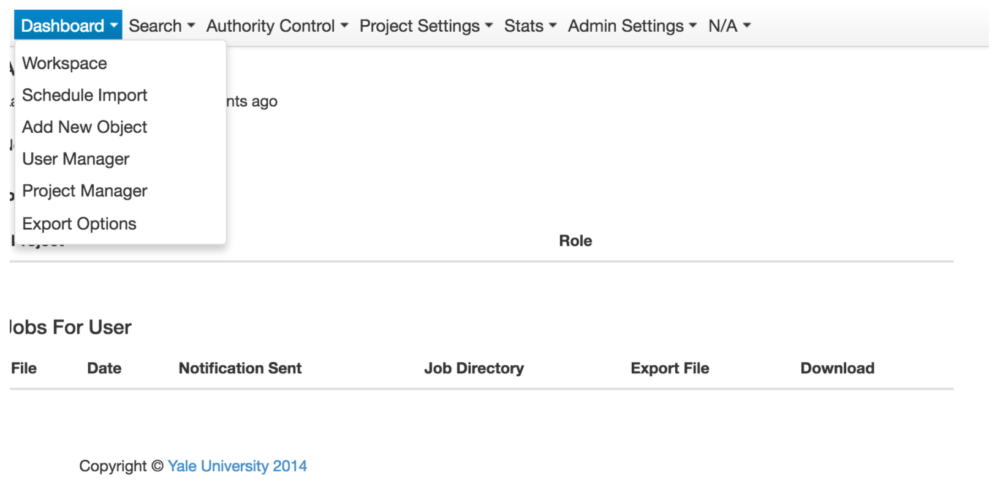
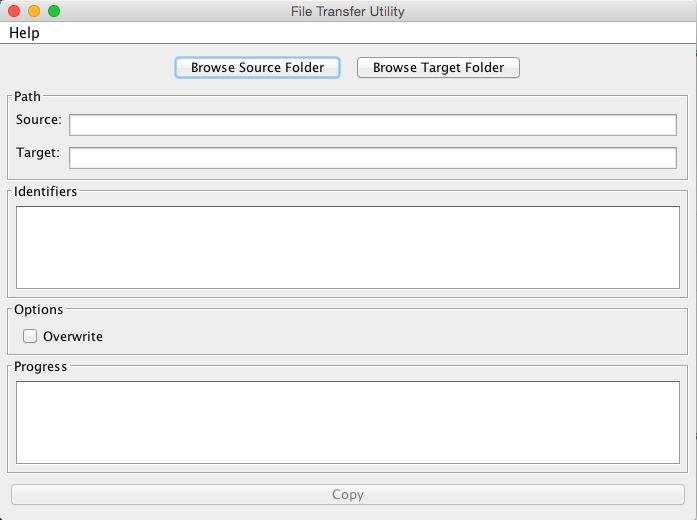

Fedora Commons Repository
- Contributed to Fedora 4 features (such as policy driven storage), participated in Scrum sprints, improved code coverage, and fixed bugs. An export of some JIRA tickets is available here, and so is an export of Pivotal Tracker tickets. (More details can be found in Pivotal and JIRA).
- Performed system testing using different tools (VisualVM, The Grinder, etc.). Analyzed ModeShape performance using a cluster of Linux machines.
- Contributed to project documentation. Some of the pages I haved added or edited are listed here.
(Web) Services
Most of these projects involved collaboration with multiple clients or stakeholders. The projects spawned multiple months and phases.
- Created several JAX-RS based services such as an archival content export service (for ArchivesSpace). The export service conducts content change analysis to determine which metadata files have changed since the last export. The program also applies several stylesheets to validate and transform MODS files. This service prevented the need to update the full multi-million object collection (instead of just a few objects). It's been designed as a part of a larger effort to automate metadata publishing.
- Created a SOAP-based persistent identifier management service
that was used by many departments. It used
Apache Axis for JAX-WS. The service
allowed machine-to-machine bulk
handle creation, and a
JSP/Servlets-based GUI was also created to facilitate
testing and spreadsheet export. This service was one of the very
first projects launched by the Office of Digital Assets and Infrastructure,
and it was critical for this project to succeed as it involved
multiple client departments. Millions of
handles were created by his service. (A
different version of this service exists now). After the project
launch, my team's director at ITS kindly acknowledged my efforts:
Great work, Osman! Always nice to be recognized - and this is a great example of how our team can contribute to the creation of important institutional services. . .
- Created a central logging service to help build error stats and visualizations (for apps like Tableau). After experimenting with other solutions, I introduced Splunk as an alternative to this service. I'm also implementing message-oriented solutions (using JMS) to connect disparate systems.
- Helped create an application for exporting the contents of a large storage repository. The service exported content using the BagIt format and relied on a MySql database to track progress. JAXB was used for marshalling/ unmarshalling XML/objects from metadata schemas such as MODS and CDWA Lite.
Image Collections
- Working with a UI/UX developer in my team, I'm helping create Palmquist (developed w/ Spring Boot/MVC/JPA) for the Beinecke library.
- A long time ago, I launched the PHP-based Ross Archive of African Images collection (developed by an external vendor), and enabled audio streaming using QuickTime, RTSP and MacOS X Server for an international collection (now offline).
Enterprise Systems
- Before using Canvas, Yale used to heavily rely on Sakai as the primary learning management system. I helped extend the Java-based Sign-up tool, a core Sakai tool that helps organize meetings. I also created services to export content and change forum permissions. Modifying these tools and services involved working with the Sakai API, JSF, JAX-WS, Spring and Hibernate.
- Maintained SharePoint (used by library staff for workflows and content management) intermittently. Successfully installed and migrated a complex enterprise instance from a failing server to a new server.
Staff Tools
- Created a JSF/Hibernate web application that helps staff manage inventory. Students scan books in library stacks, and the program generates a report that shows books that are shelved out of order, etc. The webapp allows a user to store and search reports, and it also allows students to track their scanning sessions. I worked closely with a business analyst and a graduate student to develop the business logic. This application is used by many Yale libraries (and perhaps even at UConn), and it was presented at two official events.
- Created "bulk cataloging" application with several features: import/export, cron management, asynchronous processing, notifications, versioning, etc. The Java-based project used Quartz, JAX-RS, JSF, and Hibernate. (The project is currently on hold.)
- Created a Swing bulk folder transfer application with start/stop functionality and a backend indexing service. The service is used by photographers to transfer images.
- Created a PHP-interface for a multi-institutional (Michigan, UCSD, Yale) topic modelling research project. The application allowed students to enter labels for documents.
- Designed simple UI for these applications using Bootstrap, jQuery, etc.:  
Performance Analysis
- Contributed performance improvements to prominent Hydra-based collections by
identifying code-related bottlenecks. Specifically,
looking at relevant log files (and with the help of New Relic),
I found that Solr itself was returning results
relatively fast (200-660ms for all documents, 1-2 msec for a particular object),
but 90% of the time was getting spent in Blacklight-related logic
(method “index” in a "CatalogController", e.g.), possibly
due to complicated parent-child logic. If the initial Solr query to get the 10 search results
was being made at t=0 seconds, the next one, to get the first object,
was being made around t=1 seconds later. A loop with 10 objects, representing
a page with 10 results, therefore, took almost 6-8 seconds.
I also observed other coding issues. For example, there were frequently called methods that loaded up configuration files every time they were invoked. I also found out the reason the landing page loaded in 60-90 seconds (after a user got redirected from the authentication layer): the code was making an unnecessary call to an unkempt user table with hundreds and thousands of rows.
- Analyzed Solr configuration to identify potential performance bottlenecks. I found out that we could not balance our Solr ingest and query speeds well because of some gem versions we were using. Specifically, the gem "hydra-head-6.0.0" (and thus ActiveFedora) was making hard commits, thereby creating the observed conflict between ingest and user search (ActiveFedora changed its hard committing behavior in later versions).
Back to the home page.